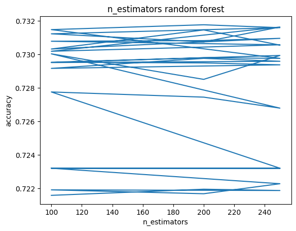

I apply an array of tree-based algorithms—Decision Trees (DT) and Random Forests—to unravel complex patterns within the cardiovascular dataset. Each method brings unique strengths: DTs for their clarity and ease of interpretation, Random Forests for their robustness and accuracy. Together, they form a comprehensive analytical approach that enhances the project’s predictive capabilities and provides insightful, data-driven decisions.
Applying a Decision Tree to cardiovascular datasets involves constructing a model that uses the data’s features to infer simple rules in a hierarchical structure, akin to a flowchart. This model excels in its interpretability, allowing medical practitioners to follow the logical progression of decisions leading to a diagnosis or prediction. It is particularly useful when the goal is to understand the decision-making process, such as identifying the risk factors that lead to heart disease.
Extending this approach, Random Forests aggregate the insights of numerous decision trees, thereby creating a ‘forest’ that is more robust and accurate. This ensemble method is especially powerful in cardiovascular studies due to its ability to handle large datasets with numerous variables, each contributing to the risk and progression of heart-related ailments. By harnessing the collective decision-making of multiple trees, Random Forests mitigate the overfitting issues prevalent in individual Decision Trees and offer a more nuanced understanding of the data.
Decision Tree
Methods
Decision Trees (DTs) stand out as a non-parametric supervised learning method, adept at both classification and regression. They aim to forge a model that predicts the value of a target variable through the learning of simple decision rules drawn from the features within the data. The method initiates at the root node, from where a multitude of paths diverge, each charting a course dictated by conditional rules. These paths culminate in the leaf nodes, which house the outcomes—the model’s predicted values—crafted through this insightful and systematic approach.
Using Decision Trees on the cardiovascular dataset is advantageous due to several key aspects of the algorithm that align well with the nature of medical data and the requirements of clinical decision-making processes.
Interpretability: Medical professionals often prefer models that provide transparent reasoning for their predictions. Decision Trees offer clear visualizations of the path taken to reach a conclusion, resembling clinical decision charts that practitioners are accustomed to, thus facilitating easier validation and trust in the model’s predictions.
Handling Non-linear Relationships: Cardiovascular data often involve complex, non-linear relationships between features and outcomes. Decision Trees can capture these non-linearities without the need for transformation of variables, as they recursively partition the space in a way that maximizes the separation of the classes or reduction of variance.
Feature Importance: Decision Trees inherently perform feature selection by prioritizing splits on the most informative features. This can be particularly useful in a clinical setting to identify and rank risk factors that are most predictive of cardiovascular events.
Why Decision Trees?
Interpretable: They mimic human decision-making better than many other algorithms, making their decisions easy to understand.
Versatile: Capable of performing both classification and regression, they can handle a variety of data types.
Non-Parametric: They make no assumptions about the distribution of data, making them a robust option for real-world data.
The methodology for applying Decision Trees to a cardiovascular dataset involves several key steps:
Data Preprocessing: This includes cleaning the data, handling missing values, encoding categorical variables, and normalizing or standardizing numerical features if necessary.
Feature Engineering: New features, such as Body Mass Index (BMI), could be derived from existing data to provide additional insight into the patient’s health status.
Model Construction: A Decision Tree model is built using the preprocessed data, where the algorithm iteratively splits the data into subsets based on certain criteria, aiming to maximize the homogeneity of the target variable within each subset.
Model Tuning: Parameters such as tree depth, minimum samples per leaf, and splitting criteria are tuned to optimize model performance and prevent overfitting.
Validation: The model’s performance is assessed using appropriate metrics like accuracy, precision, recall, and the area under the ROC curve for classification tasks or mean squared error for regression.
Interpretation: The resulting tree is analyzed to understand the decision paths and rules it has learned, which features are most important for predictions, and how different feature values affect the outcome.
Class Distribution
Code
import pandas as pdcardio=pd.read_csv('../Data/01-modified-data/cardiovascular_numeric_final.csv')count0 =len(cardio[cardio['cardio'] ==0])count1 =len(cardio[cardio['cardio'] ==1])total = count0 + count1 prop1 = count0 / totalprop2 = count1 / totalprint("Number of points with cardio=0:", count0, prop1)print("Number of points with cardio=1:", count1, prop2)
Number of points with cardio=0: 33577 0.5181156065796377
Number of points with cardio=1: 31229 0.4818843934203623
From the code above, there are 31,229 data records labeled as cardiovascular disease, and for non-cardiovascular disease, there are 33,557 records. The split is approximately 1:1, which guarantees a large number of data points for each class label. When splitting the dataset, attention must be paid to maintain a similar balance between the two classes to ensure an effective training and test data split.
Baseline Model for Comparison
Code
#Baseline Random Classifierimport numpy as npimport pandas as pdimport randomfrom collections import Counterfrom sklearn.metrics import accuracy_scorefrom sklearn.metrics import precision_recall_fscore_supportdf=pd.read_csv('../Data/01-modified-data/cardiovascular_numeric_final.csv')Y=df[['cardio']]np.random.seed(12)# RANDOM CLASSIFIER def random_classifier(y_data): ypred=[]; max_label=np.max(y_data);#print(max_label)for i inrange(0,len(y_data)): ypred.append(int(np.floor((max_label+1)*np.random.uniform(0,1))))print("-----RANDOM CLASSIFIER-----")print("count of prediction:",Counter(ypred).values()) # counts the elements' frequencyprint("probability of prediction:",np.fromiter(Counter(ypred).values(), dtype=float)/len(y_data)) # counts the elements' frequencyprint("accuracy",accuracy_score(y_data, ypred))print("percision, recall, fscore,",precision_recall_fscore_support(y_data, ypred))print("\nBINARY CLASS: UNIFORM LOAD")y=Yrandom_classifier(y)print("\nBINARY CLASS: NON UNIFORM LOAD")y=Yrandom_classifier(y)
BINARY CLASS: UNIFORM LOAD
-----RANDOM CLASSIFIER-----
count of prediction: dict_values([32479, 32327])
probability of prediction: [0.50117273 0.49882727]
accuracy 0.49902786779001945
percision, recall, fscore, (array([0.51710336, 0.48086739]), array([0.50019358, 0.4977745 ]), array([0.50850793, 0.4891749 ]), array([33577, 31229]))
BINARY CLASS: NON UNIFORM LOAD
-----RANDOM CLASSIFIER-----
count of prediction: dict_values([32371, 32435])
probability of prediction: [0.49950622 0.50049378]
accuracy 0.5042742955899145
percision, recall, fscore, (array([0.52241204, 0.48617234]), array([0.50364833, 0.50494732]), array([0.51285862, 0.49538201]), array([33577, 31229]))
A random classifier randomly picks either 1 or 0 as the predicted number, resulting in an accuracy of around 50%, as expected, due to the binary outcome. It could serve as the baseline model because all machine learning models should surpass random guessing. The machine learning model must discern patterns from the training data to predict outcomes for the test data. Random guessing does not incorporate any information from the training data and thus performs the worst among all models. When comparing tree models and random forest models, metrics such as accuracy, recall, and precision should all outperform the baseline model.
Features Selection (optional)
For feature selection, as there are only 12 feature variables in the dataset, all features have been retained to train the tree model and preserve the maximum amount of information.
Model Tuning
One of the most importan parameters for the tree model is the ‘max_depth’ parameter. It controls how many splits a tree model could make. If ‘max_depth’ is set too high, the training tree model will make as many splits as possible and try to perfectly fit the training data. It will potentially lead to overfitting whch is a notable issue of using tree model. Therefore, hyperparameter tuning process is conducted on this ‘max_depth’ variable for constructing the tree model.
Accuracy
Recall
From the above graphs, the best test accuracies are achieved when ‘max_depth’ is between 4 and 7. This range is reasonable as it not only attains high test accuracy but also maintains a decent level of interpretability for the tree model. Given the nature of this research, which prioritizes the correct prediction of all cardiovascular diseases, it is crucial to minimize false negatives and, hence, maximize recall. The recall graph indicates that the best recall is obtained when ‘max_depth’ is set to 4. Therefore, as a result of hyperparameter tuning, the ‘max_depth’ for the final tree model is established at 4.
Final Results
The final tree model is constructed with ‘max_depth’ set to 4. The statistics for the training and test data are shown as follows.
Training
Test
Training
Test
For training data, the accuracy is at 0.7285 and the recall for Y = 1 is 0.7265 while for test data, the accuracy is at 0.7309 and the recall for Y = 1 is 0.7243. Overall, the performance is relatively strong, with an accuracy rate of over 70% for both the training and test data. Since the training and test data perform similarly, no overfitting issue is identified. From a recall perspective, the scores are also above 0.7, indicating that 70% of the true cardiovascular disease records are predicted correctly. This is a positive outcome, as the research goal focuses more on maximizing recall than precision.
Tree Diagram
The tree diagram illustrates that the primary attributes influencing the decision-making process include ‘ap_hi’, ‘age’, ‘cholesterol’, ‘gluc’, ‘bmi’, and ‘ap_lo’. At the very top, the root node is represented by ‘ap_hi’, which suggests that it is perhaps the most significant factor in this particular dataset. This node splits the dataset into two distinct groups, forming the basis for further analysis. Following this, ‘ap_hi’ branches out into two paths leading to ‘age’ and another instance of ‘ap_hi’, which are then further divided into sub-nodes. These sub-nodes, which result from subsequent splits, are referred to as decision nodes. As the process continues, each decision node evaluates additional attributes, further refining the categorization until reaching a conclusion at the leaf nodes. Tree models are relatively easy to interpret. For instance, to interpret the leftmost node: if ‘ap_hi’ is less than or equal to 129.5, ‘age’ is less than or equal to 54.5, ‘cholesterol’ is less than or equal to 2.5, and ‘age’ is again less than or equal to 45, then the class is predicted to be 0, indicating non-cardiovascular disease. This logic is reasonable because if an individual is younger with lower levels of cholesterol and blood pressure, it typically suggests that the person is healthier and in better shape, thus having a lower risk of developing cardiovascular disease.
Random Forest
Methods
The Random Forest method is a type of ensemble learning technique, particularly useful for classification and regression tasks. The method operates by constructing a multitude of decision trees at training time and outputting the class that is the mode of the classes (classification) or mean prediction (regression) of the individual trees. Random Forests belong to the broader class of ensemble methods which operate by building multiple models and aggregating their predictions.
Key Features of Random Forest:
Ensemble of Decision Trees: It combines the predictions from multiple decision tree models to produce a more accurate and stable prediction than any individual tree.
Randomness: When building trees, each tree in a Random Forest is built from a sample drawn with replacement (i.e., a bootstrap sample) from the training set. Moreover, when splitting nodes, the selected features are chosen from a random subset of the features. This ensures diversity among the trees, which adds to the robustness of the model.
Reduction of Overfitting: Unlike single decision trees, which can be prone to overfitting, Random Forests mitigate this by averaging or ‘voting’ across the forest of trees, which tends to cancel out biases and variances.
Variable Importance: Random Forests have the ability to provide a measure of feature importance by observing how much prediction errors increase when data for that feature is permuted while all others are left unchanged.
Versatility: They can be used for both categorical and continuous inputs and outputs, and they inherently perform multiclass classification. Non-parametric Method: The Random Forest algorithm makes no underlying assumptions about the distribution of data.
Random Forest Algorithm Steps:
Bootstrap Sampling: Select N random samples from the dataset with replacement to create a bootstrap dataset.
Tree Building:
Grow a decision tree from the bootstrap dataset. At each node:
Select a random subset of features.
Choose the best split among those features to partition the data. Split the node into child nodes.
Repeat: Repeat steps 1 and 2 to create a predetermined number of trees, adding each new tree to the forest.
Aggregation:
For classification tasks, use majority voting from each decision tree.
For regression tasks, take the average prediction from all decision trees.
Prediction: To predict new data, run the data through each tree in the forest and use the majority vote or average as the final prediction.
Class Distribution
Refer to the class distribution in the Decision Tree section for additional details.
Baseline Model for Comparison
Refer to the same baseline model in the Decision Tree section for additional details.
Features Selection (optional)
In the context of Random Forest, a subset of features is selected when building each tree within the forest. Therefore, additional feature selection will not be conducted during the Random Forest model building process.
Model Tuning
During the model tuning phase for the Random Forest algorithm, I opted to adjust the parameters ‘max_depth’, ‘max_features’, and ‘n_estimators’. The parameter ‘max_depth’, also adjusted in the Decision Tree section, establishes the tree’s maximum depth. ‘max_features’ determines the number of features evaluated when identifying the optimal split during the tree’s training process. In a Random Forest, this parameter introduces an element of randomness to the model. Rather than selecting the best feature for each node split, it chooses from a random subset of features, which results in a variety of trees. The ‘n_estimators’ parameter indicates the number of trees within the Random Forest. This represents the ensemble’s size; typically, more trees enhance performance but extend the training duration.
The outcomes of the hyperparameter tuning are documented as follows.

Based on the aforementioned results, the parameters that yield the highest accuracies are {‘max_depth’: 8, ‘max_features’: 5, ‘n_estimators’: 200}. These parameters will be employed to construct the final Random Forest model.
Final Results
Train
Test
Train
Test
For training data, the accuracy is at 0.7427 and the recall for Y = 1 is 0.6687 while for test data, the accuracy is at 0.7316 and the recall for Y = 1 is 0.6523. Overall, the performance is moderatly strong, with an accuracy rate of over 70% for both the training and test data. Since the training and test data perform similarly, no overfitting issue is identified. From a recall perspective, the scores are also above 0.65, indicating that 65% of the true cardiovascular disease records are predicted correctly. This is a positive outcome, as the research goal focuses more on maximizing recall than precision.
Variable
From the variable importance graph displayed above, ‘bmi’, ‘age’, ‘cholesterol’, ‘ap_lo’, and ‘ap_hi’ emerge as the top five most important variables in the Random Forest model building process. These results align with those obtained using other machine learning methods and also mirror the findings of the feature selection section discussed in previous segments. These key variables are crucial in relation to cardiovascular disease during the model training process for Random Forest and should receive more focus in future research endeavors.
Conclusion
Overall, both the decision tree and random forest models performed well, achieving high accuracy and recall scores on the test data. The decision tree appears to be superior to the random forest model due to its higher recall score and the absence of any obvious overfitting pattern. Unlike the random forest, the decision tree maintains the advantage of easy interpretation. With its tree diagram, audiences can effortlessly analyze the prediction results by interpreting the outcomes along each branch and node. Additionally, the dataset does not contain an excessive number of features, which would necessitate a more sophisticated feature selection process. Although random forests are more adept at selecting key features and preventing overfitting compared to decision trees, these aspects are not the primary focus of this research project, given the dataset’s characteristics. Therefore, based on the stronger model performance and ease of interpretation, I will opt for the decision tree over the random forest in this instance.